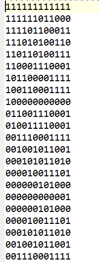

How To We Reach Our Goal
利用Matlab去進行 SIN 和 COS 之波型的模擬並採樣，其中的數值將全部轉換成0與1，之後將結果錄進去.txt 檔之中。 主要流程為：
可以參考以下圖片與程式碼:
sin波：
% Set parameters
f1 = 5000; % waveform frequency
fs = 32 * f1; % sampling frequency, ensuring 32 points per cycle
N = 12; % number of quantization bits
num_cycles = 2000; % number of cycles
samples_per_cycle = 32; % sampling points per cycle
% Generate time vector
t = 0:1/fs:(samples_per_cycle * num_cycles - 1)/fs;
% Generate sine wave
sin_wave = 2047 * sin(2 * pi * f1 * t);
% Quantize to 12 bits
quantized_wave = round(sin_wave);
% Convert positive and negative values to 12-bit signed values
% Set values greater than or equal to 2048 to the maximum value
quantized_wave(quantized_wave >= 2048) = 2047;
% Set values less than or equal to -2048 to the minimum value
quantized_wave(quantized_wave <= -2048) = -2048;
% Convert to 12-bit binary strings
binary_wave = dec2bin(quantized_wave + 2048, N);
% Write to text file
fid = fopen('C:\homework\Communication experiment\project\testdata_sin', 'w');
for i = 1:length(binary_wave)
fprintf(fid, '%s\n', binary_wave(i, :));
end
fclose(fid);
cos波：
% Set parameters
f1 = 5000; % waveform frequency
fs = 32 * f1; % sampling frequency, ensuring 32 points per cycle
N = 12; % number of quantization bits
num_cycles = 2000; % number of cycles
samples_per_cycle = 32; % sampling points per cycle
% Generate time vector
t = 0:1/fs:(samples_per_cycle * num_cycles - 1)/fs;
% Generate cos wave
cos_wave = 2047 * cos(2 * pi * f1 * t);
% Quantize to 12 bits
quantized_wave = round(cos_wave);
% Convert positive and negative values to 12-bit signed values
% Set values greater than or equal to 2048 to the maximum value
quantized_wave(quantized_wave >= 2048) = 2047;
% Set values less than or equal to -2048 to the minimum value
quantized_wave(quantized_wave <= -2048) = -2048;
% Convert to 12-bit binary strings
binary_wave = dec2bin(quantized_wave + 2048, N);
% Write to text file
fid = fopen('C:\homework\Communication experiment\project\testdata_cos', 'w');
for i = 1:length(binary_wave)
fprintf(fid, '%s\n', binary_wave(i, :));
end
fclose(fid);

波形之二進字
利用Verilog撰寫PSK的模塊，可以分成兩部分，分別為調變與解調:
程式碼如下:
// PSK Modulation
always @(posedge clk_1M or negedge rst) begin
if (!rst) begin
Mod_out0 <= 0;
Mod_out1 <= 0;
end else begin
if (M_out == 1'b0)
Mod_out0 <= cos0;
else
Mod_out1 <= sin1;
end
end
程式碼如下:
// PSK Demodulation
always @(posedge clk_1M or negedge rst) begin
if (!rst)
demod_out <= 0;
else if (received_signal == cos0)
demod_out <= 1'b0;
else if (received_signal == sin1)
demod_out <= 1'b1;
end
用於生成相位增量。每個時鐘週期增加固定的相位增量，輸出作為查找表的地址。